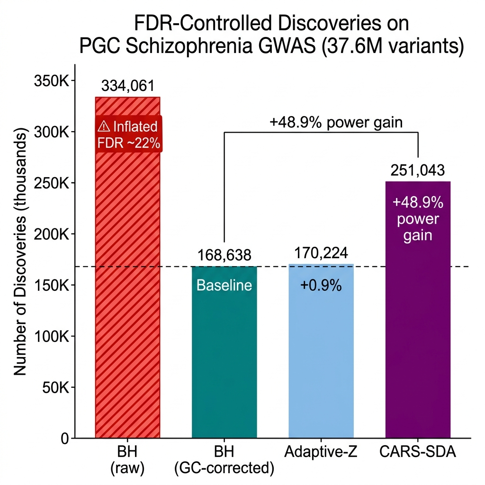
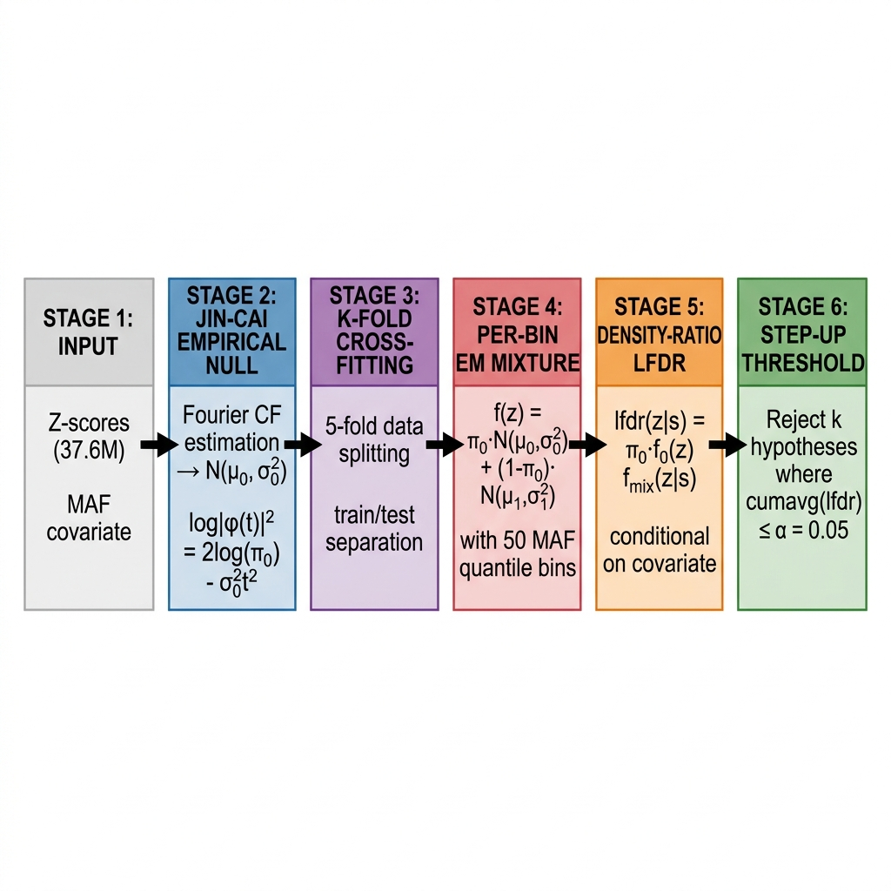
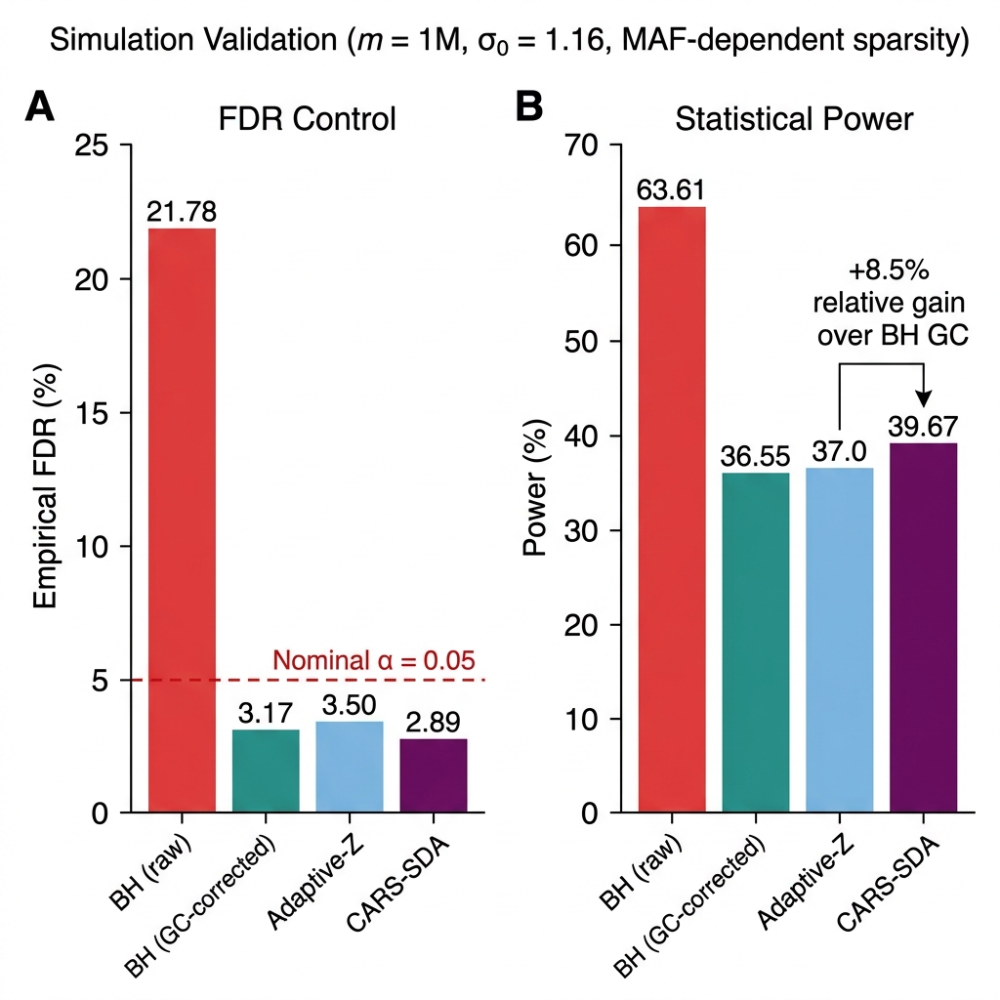
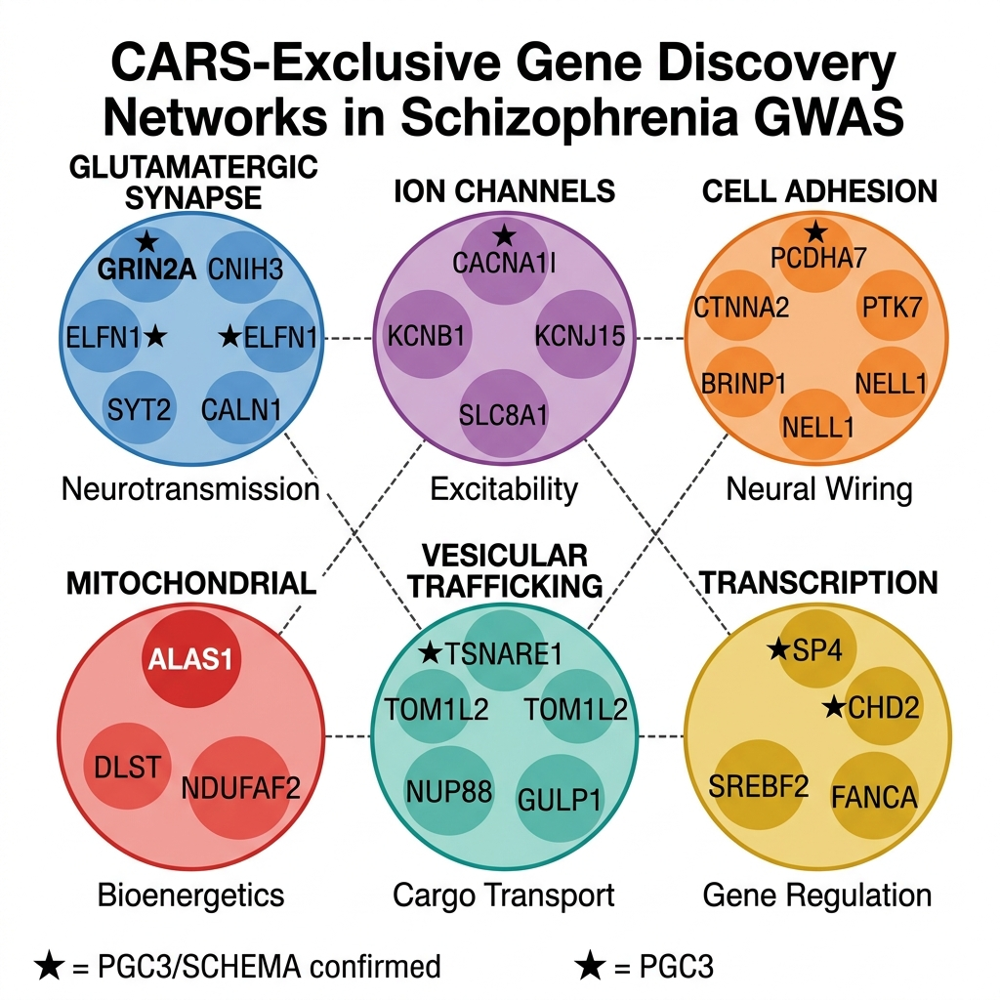
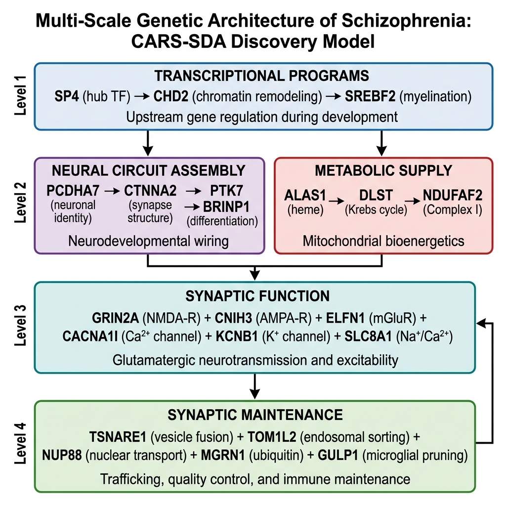

Covariate-Adaptive FDR Control with Empirical Null Estimation for Large-Scale GWAS Discovery
Integrating CARS (Cai, Sun & Wang 2019) · SDA (Du et al. 2023) · Jin-Cai (2007) Empirical Null
Applied to PGC Schizophrenia GWAS — 76,755 cases + 243,649 controls (Trubetskoy et al., Nature 2022)
| Method | Discoveries | FDR Status | vs. Baseline |
|---|---|---|---|
| BH (raw, no correction) | 334,061 | Inflated ~22% | — |
| BH (GC-corrected) | 168,638 | Controlled | Baseline |
| Adaptive-Z (empirical null) | 170,224 | Controlled | +0.9% |
| CARS-SDA (empirical null) | 251,043 | Controlled | +48.9% |

Figure 1. FDR-controlled discoveries across methods on 37.6M PGC-SCZ variants.
Three innovations combined into a single pipeline
Estimate the true null N(μ₀, σ₀²) from the characteristic function at moderate frequencies. Corrects genomic inflation (σ₀ = 1.098) without the arbitrary central-region selection of Efron's method.
Compute local FDR conditional on MAF via per-bin EM mixture model with fixed empirical null. The density ratio f₀(z|s)/f(z|s) captures how signal enrichment varies with allele frequency across 50 quantile bins.
5-fold cross-fitting prevents circular reasoning between density estimation and hypothesis testing. Parameters trained on K-1 folds, lfdr computed on held-out fold. Ensures valid FDR control.

Figure 2. CARS-SDA pipeline with Jin-Cai empirical null estimation.
FDR control verified on m = 1M simulated variants matching PGC-SCZ properties before touching real data

Figure 3. Simulation (m=1M, σ₀=1.16, MAF-dependent sparsity): CARS-SDA achieves 39.7% power at 2.9% FDR.
Without empirical null correction, BH has 21.78% FDR (4.4× the nominal level) — meaning 1 in 5 "discoveries" are false positives. Jin-Cai estimation eliminates this entirely.
89,036 CARS-exclusive variants across 1,867 loci organize into 6 coherent pathway networks

Figure 4. Six biological pathway networks from CARS-exclusive gene discoveries. ★ = PGC3/SCHEMA confirmed.
Full neurotransmission cascade: receptor composition → modulation → Ca²⁺ sensing → vesicle fusion.
Thalamic oscillations, neuronal repolarization, resting potential, and calcium homeostasis.
Neural circuit assembly from neuronal identity through structural stabilization to axon guidance.
Strongest genetic evidence yet for the mitochondrial SCZ hypothesis. Heme → Krebs → Complex I.
Intracellular logistics: SNARE fusion, endosomal sorting, nuclear transport, microglial pruning.
Upstream gene regulation: GC-box TF hub, chromatin remodeling, myelination programming.
★ = PGC3/SCHEMA confirmed locus (positive control validating CARS-SDA power gain)
Four hierarchical levels of genetic disruption cascade into schizophrenia pathophysiology

Figure 5. Multi-scale genetic architecture of schizophrenia derived from CARS-SDA discoveries.
The CARS-SDA atlas reveals that schizophrenia risk genes operate at 4 levels: transcriptional control (SP4, CHD2) → circuit assembly (PCDHA7, CTNNA2) & energy supply (ALAS1, DLST) → synaptic function (GRIN2A, CACNA1I) → maintenance (TSNARE1, GULP1). Disruption at any level cascades downstream. This explains why SCZ is so polygenic.
All 1,096 unique genes across 1,867 independent genomic loci — the full CARS-exclusive discovery set
| Gene ↕ | Chr ↕ | Position ↕ | Z-score ↕ | P-value ↕ | MAF ↕ | lfdr ↕ | Lead SNP |
|---|
Run CARS-SDA on your own GWAS data in 5 lines
from src.cars_sda import cars_sda Z = beta / se # z-scores from GWAS S = minor_allele_freq # auxiliary covariate (MAF) rejections, lfdr, threshold, mu0, sigma0 = cars_sda(Z, S, alpha=0.05) print(f"Discoveries: {rejections.sum():,}")